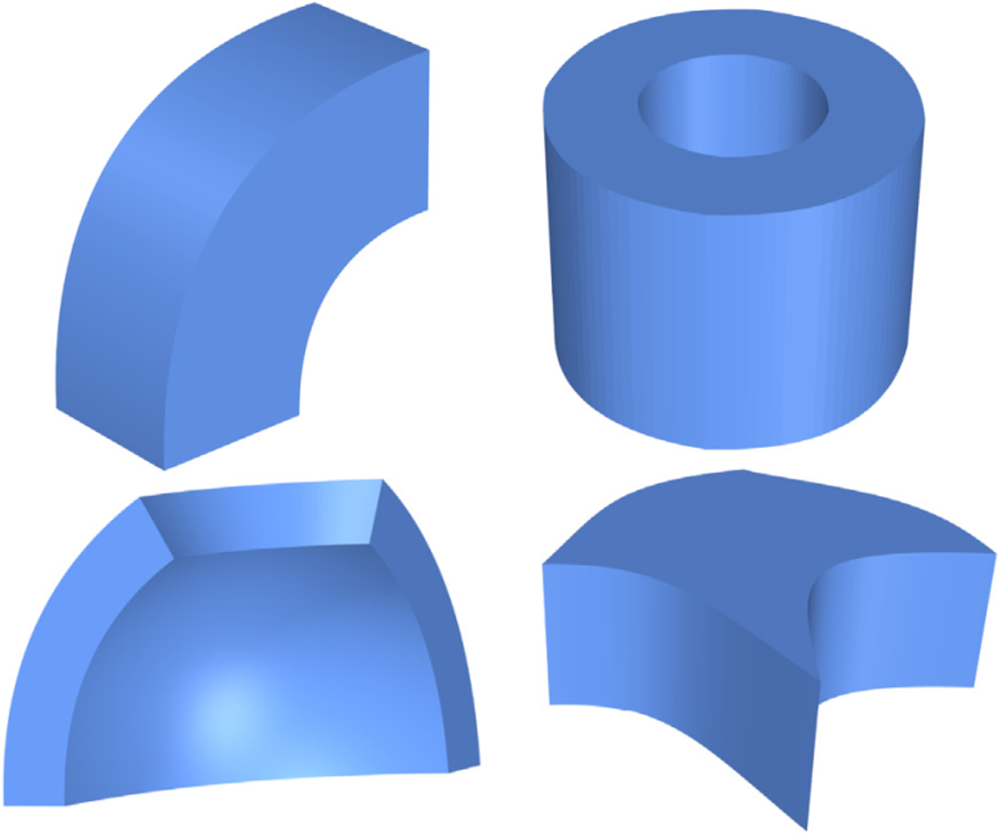
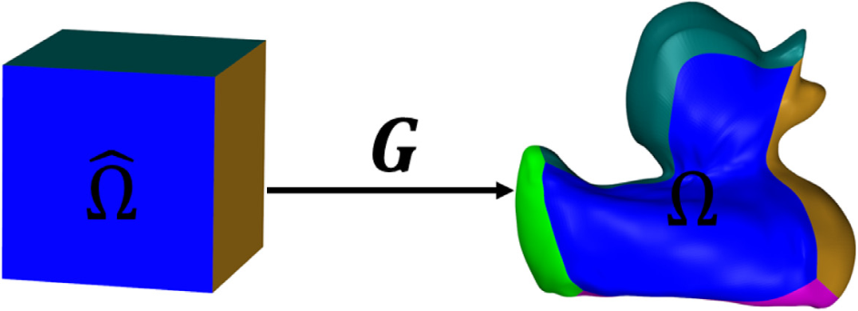
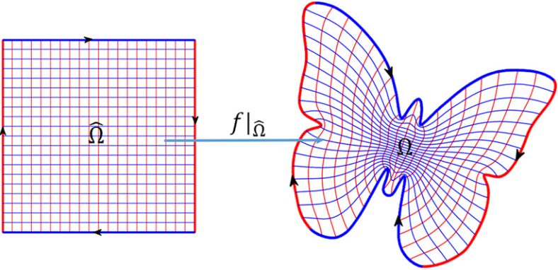

学术论文
代表性论文
 |
Efficient Matrix Computation for Isogeometric Discretizations with Hierarchical B-splines in Any Dimension |
|  |
Fast Formation of Isogeometric Galerkin Matrices via Integration by Interpolation and Look-up |
|  |
Volumetric Spline Parameterization for Isogeometric Analysis |
 |
Spectral Mesh Segmentation via l0 Gradient Minimization |
 |
Low-rank Parameterization of Volumetric Domains for Isogeometric Analysis |
 |
Boundary Correspondence of Planar Domains for Isogeometric Analysis Based on Optimal Mass Transport |
|  |
Low-rank parameterization of planar domains for isogeometric analysis |
 |
Phase-field guided surface reconstruction based on implicit hierarchical B-splines |
 |
Compact Implicit Surface Reconstruction via Low-rank Tensor Approximation |
其他论文
 |
Efficient matrix assembly in isogeometric analysis with hierarchical B-splines |
 |
Corner-Cutting Subdivision Surfaces of General Degrees with Parameters |
 |
Recovery of sharp features in mesh models |